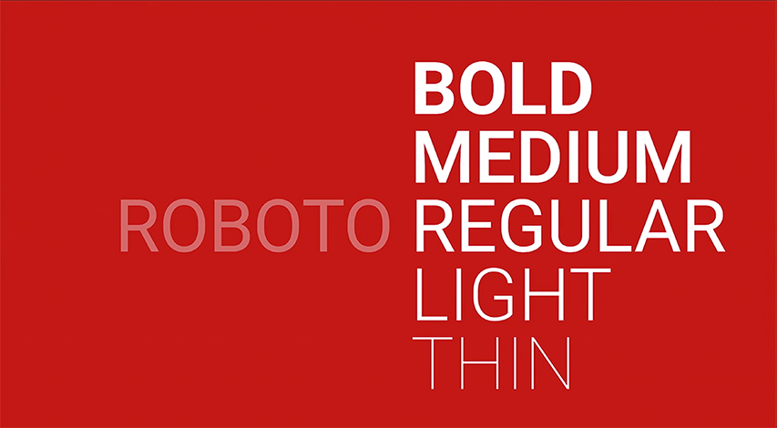
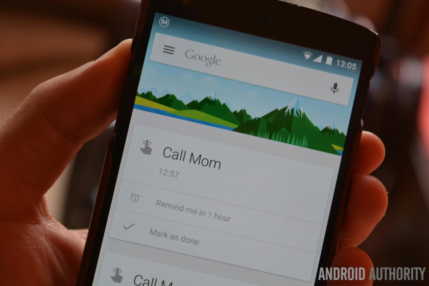

On this page

A clean, neutral, and highly functional typeface designed to feel modern, friendly, and invisible while supporting digital interfaces.

Designed by:
Christian Robertson
Foundry:
Country:
🌍 United States
Year:
2011
Intent:
- Designed as Google’s system typeface for Android
- Meant to replace more mechanical neo-grotesques with something warmer and more human
- Balances geometric structure with open, friendly curves
- Optimised for on-screen readability across many devices and sizes
What was happening at the time:
- Rapid growth of smartphones and responsive digital interfaces
- Increased need for typefaces optimized for screens, not print
- Shift toward flat design and minimal UI aesthetics
- Google developing a cohesive visual language (Material Design)
Type classification:
- Primary: Sans-serif
- Secondary: Neo-grotesque
Characterised by:
- Clean, modern proportions
- Neutral, unobtrusive tone
Compared to classic grotesques like Helvetica, Roboto feels warmer, more open, and better suited to digital environments.
Famous examples in use:

- Android operating system
- Google Search, Gmail, Maps, and YouTube (for many years)
- Material Design interfaces
- Countless mobile apps and websites
Why designers still use it:
- Instantly communicates clarity, neutrality, and modernity
- Extremely versatile across weights, sizes, and platforms
- Excellent readability on screens
- Reliable default choice for UI, UX, and digital products
Commonly used in app design, web interfaces, dashboards, and tech branding.
When NOT to use it (teaching note):
- Projects requiring strong personality or emotional expression
- Luxury, heritage, or editorial designs needing character
- Situations where typographic distinctiveness is critical
- Long-form print typography where a serif may perform better
Usage:
Use this typeface when you want to communicate clarity, neutrality, and modern efficiency — but not personality, emotion, or historical character.